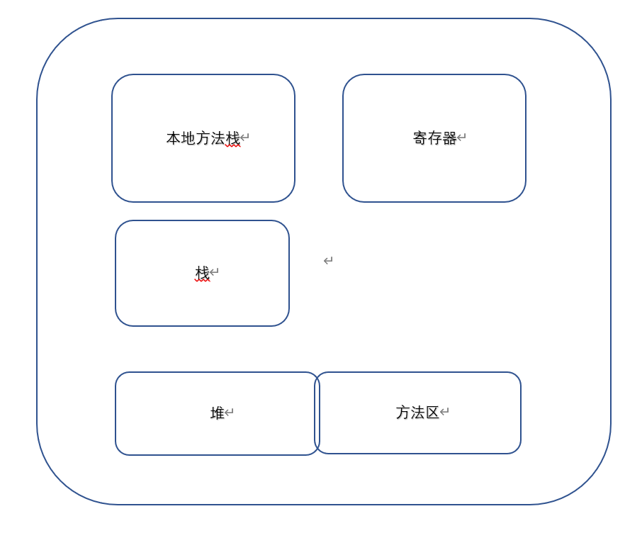

加载中...
文章
1
标签
1
分类
1
Home
Archives
Tags
Categories
RainyDoor
Home
Archives
Tags
Categories
java内存管理
发表于
2024-03-11
|
更新于
2024-03-11
|
java 学习笔记
|
字数总计:
18
|
阅读时长:
1分钟
|
阅读量:
一、Java 内存分配介绍
1. jdk7 及之前

2. jdk8 及之后
文章作者:
RainyDoor
文章链接:
https://rainydoor.github.io/21724099.html
版权声明:
本博客所有文章除特别声明外，均采用
CC BY-NC-SA 4.0
许可协议。转载请注明来自
RainyDoor
！
java
RainyDoor
文章
1
标签
1
分类
1
Follow Me
公告
This is my Blog
目录
1.
一、Java 内存分配介绍
1.1.
1. jdk7 及之前
1.2.
2. jdk8 及之后
最新文章
java内存管理
2024-03-11